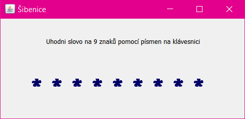

Domácí úkol - Šibenice
Spusťte demo, zahrajte si jej a vytvořte totéž.

Stahujte a zkoušejte odtud: Sibenice-demo.zip.
Demo lze buď přímo spustit na Windows nebo Macu,
nebo je možné složku otevřít jako projekt v IntelliJ IDEA.
Tohle by se vám mohlo hodit ;-)
Program využívá událost keyPressed nastavenou na hlavním okně. V designeru to zařídíte snadno - kliknete pravým tlačítkem na titulek okna (ideálně v místě horního okraje, vedle tlačítek pro zavření a minimalizaci) a v nabídce Add Event Handler vyberete KeyListener a keyPressed.
Pokud se stane, že vám událost nebude fungovat, je pravděpodobné, že jste neklikly na okno (v jeho okraji), ale na contentPane či jinou komponentu v okně.
V obsluze události se vám může hodit možná tato podmínka:
e.getKeyCode() == KeyEvent.VK_KLAVESA
Pokud budete mít s úkolem jakýkoliv problém, využjte naši
facebookovou skupinu,
kde vám rádi poradíme.
Raději se 10x zeptejte, než abyste to vzdaly!